brolgar explores two ways to explore the data, first exploring the raw data, then exploring the data using summaries. This vignette displays a variety of ways to explore your data around these two ideas.
When you first receive your data, you want to look at as much raw data as possible. This section discusses a few techniques to make it more palatable to explore your raw data without getting too much overplotting.
Sample n random individuals to explore (Note: Possibly not representative)
For example, we can sample 20 random individuals, and then plot them. (perhaps change sample_n_keys into sample_id.)
wages %>% sample_n_keys(size = 20) #> # A tsibble: 147 x 9 [!] #> # Key: id [20] #> id ln_wages xp ged xp_since_ged black hispanic high_grade #> <int> <dbl> <dbl> <int> <dbl> <int> <int> <int> #> 1 9290 1.46 0.412 0 0 0 1 8 #> 2 9290 1.66 0.824 0 0 0 1 8 #> 3 9290 1.57 0.884 0 0 0 1 8 #> 4 9290 2.11 1.9 0 0 0 1 8 #> 5 9290 1.84 2.26 0 0 0 1 8 #> 6 9290 1.66 2.34 0 0 0 1 8 #> 7 9853 1.76 0.463 0 0 0 1 10 #> 8 9853 1.89 0.579 0 0 0 1 10 #> 9 9853 1.86 1.16 0 0 0 1 10 #> 10 9853 1.88 2.22 0 0 0 1 10 #> # … with 137 more rows, and 1 more variable: unemploy_rate <dbl> wages %>% sample_n_keys(size = 20) %>% ggplot(aes(x = xp, y = ln_wages, group = id)) + geom_line()
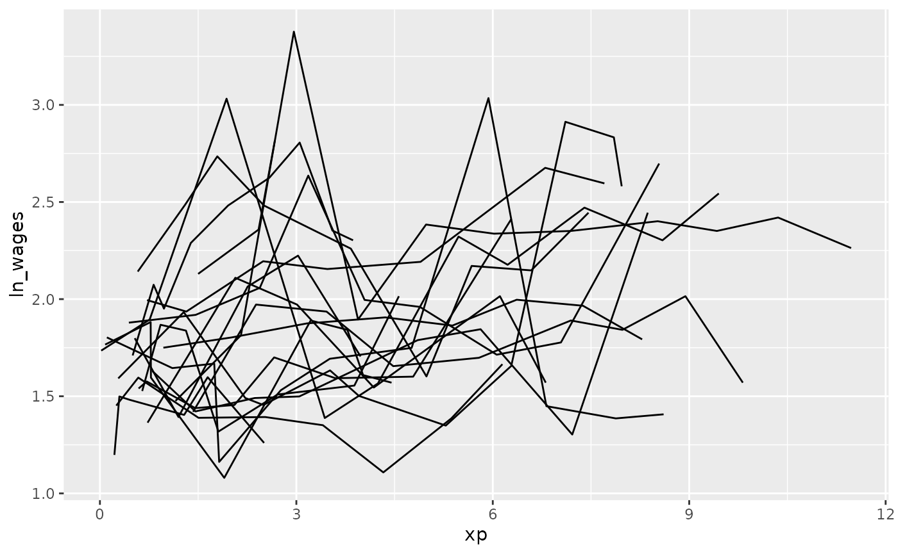
There was a variety of the number of observations in the data - some with only a few, and some with many. We can filter by the number of the observations in the data using add_n_obs(), which adds a new column, n_obs, the number of observations for each key.
wages %>% add_n_obs() #> # A tsibble: 6,402 x 10 [!] #> # Key: id [888] #> id xp n_obs ln_wages ged xp_since_ged black hispanic high_grade #> <int> <dbl> <int> <dbl> <int> <dbl> <int> <int> <int> #> 1 31 0.015 8 1.49 1 0.015 0 1 8 #> 2 31 0.715 8 1.43 1 0.715 0 1 8 #> 3 31 1.73 8 1.47 1 1.73 0 1 8 #> 4 31 2.77 8 1.75 1 2.77 0 1 8 #> 5 31 3.93 8 1.93 1 3.93 0 1 8 #> 6 31 4.95 8 1.71 1 4.95 0 1 8 #> 7 31 5.96 8 2.09 1 5.96 0 1 8 #> 8 31 6.98 8 2.13 1 6.98 0 1 8 #> 9 36 0.315 10 1.98 1 0.315 0 0 9 #> 10 36 0.983 10 1.80 1 0.983 0 0 9 #> # … with 6,392 more rows, and 1 more variable: unemploy_rate <dbl>
We can then filter our data based on the number of observations, and combine this with the previous steps to sample the data using sample_n_keys().
library(dplyr) #> #> Attaching package: 'dplyr' #> The following objects are masked from 'package:stats': #> #> filter, lag #> The following objects are masked from 'package:base': #> #> intersect, setdiff, setequal, union wages %>% add_n_obs() %>% filter(n_obs >= 5) %>% sample_n_keys(size = 20) %>% ggplot(aes(x = xp, y = ln_wages, group = id)) + geom_line()
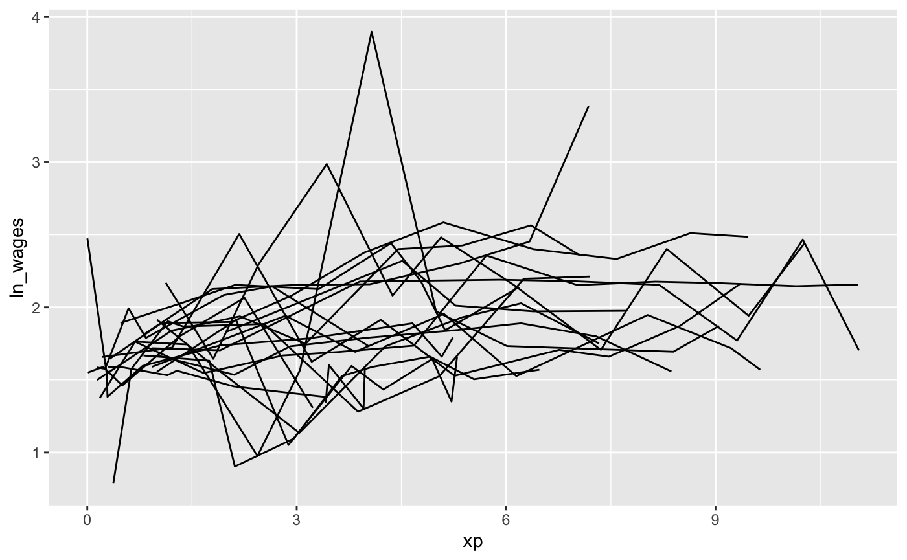
facet_strata
brolgar provides some clever facets to help make it easier to explore your data. facet_strata() splits the data into 12 groups by default:
set.seed(2019-07-23-1936) library(ggplot2) ggplot(wages, aes(x = xp, y = ln_wages, group = id)) + geom_line() + facet_strata()
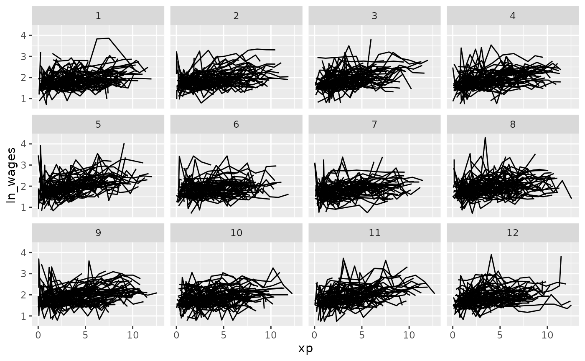
You can control the number with n_strata:
set.seed(2019-07-23-1936) library(ggplot2) ggplot(wages, aes(x = xp, y = ln_wages, group = id)) + geom_line() + facet_strata(n_strata = 6)
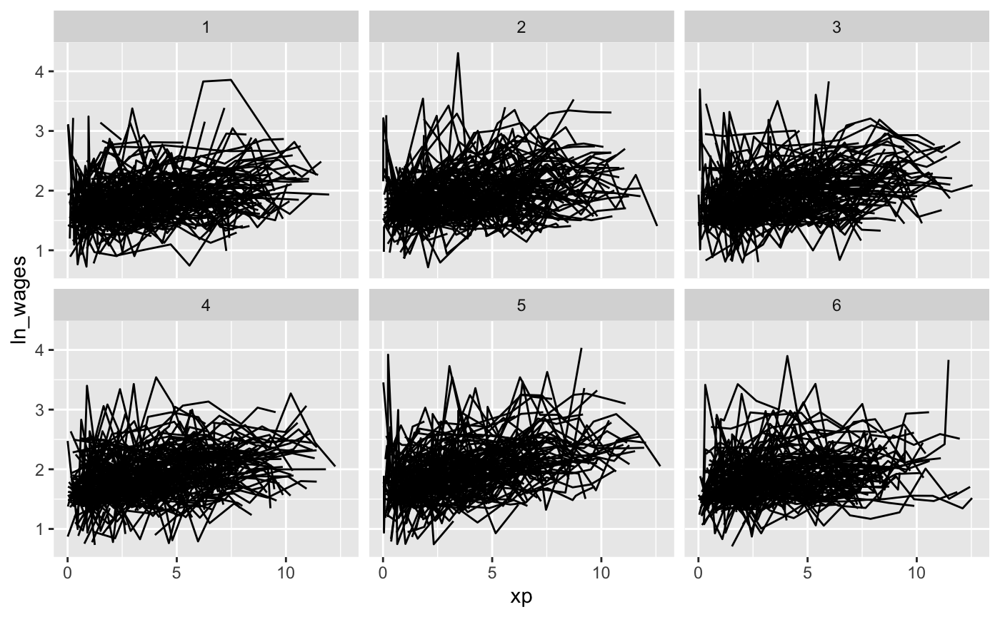
And have your regular control with other facet options:
set.seed(2019-07-23-1936) library(ggplot2) ggplot(wages, aes(x = xp, y = ln_wages, group = id)) + geom_line() + facet_strata(n_strata = 6, nrow = 3, ncol = 2)
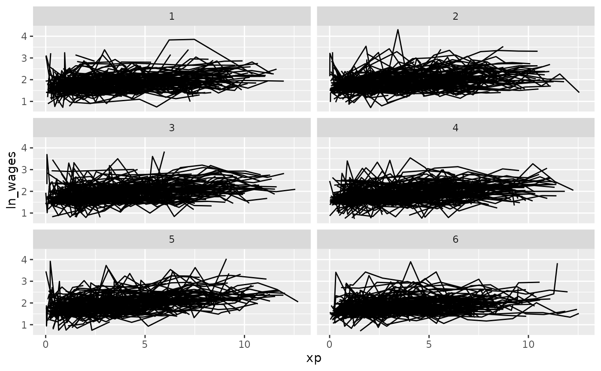
facet_sample
facet_sample() allows you to specify a number of samples per plot with, “n per plot” and the number of facets to show with “n facets”. By default it splits the data into 12 facets with 3 per group:
set.seed(2019-07-23-1937) ggplot(wages, aes(x = xp, y = ln_wages, group = id)) + geom_line() + facet_sample()
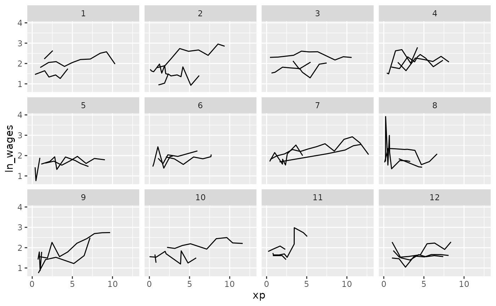
This allows for you to look at a larger sample of the data.
We can combine add_n_obs() and filter() to show only series which have only 5 or more observations:
set.seed(2019-07-23-1937) wages %>% add_n_obs() %>% filter(n_obs >= 5) %>% ggplot(aes(x = xp, y = ln_wages, group = id)) + geom_line() + facet_sample()
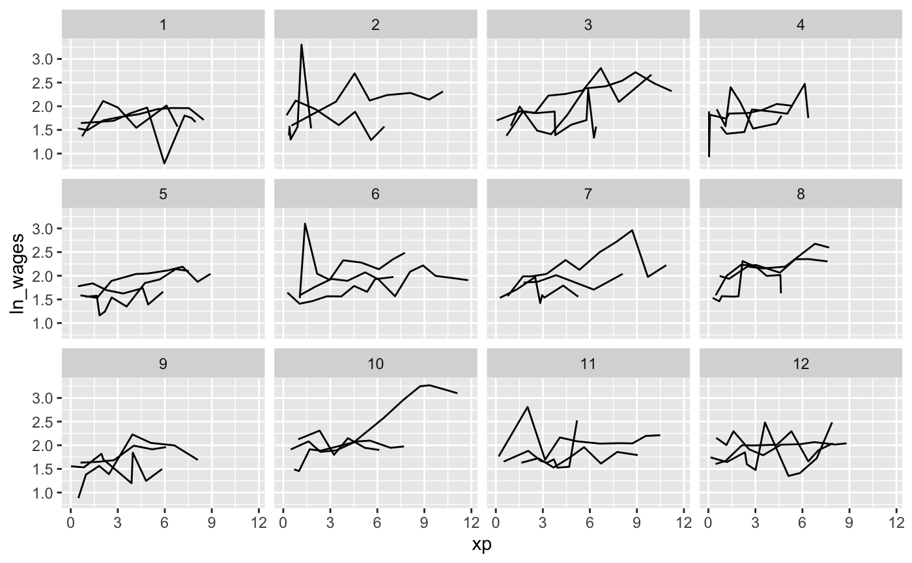
These approaches allow you to view large sections of the raw data, but it does not point out individuals that are “interesting”, in the sense of those being outliers, or representative of the middle of the group.
You can plot the features of the data by first identifying features of interest and then joining them back to the data. For a more details explanation of this, see the vignette, Finding Features.
In this example, we will plot those whose values only increase or decrease with feat_monotonic and gghighlight:
library(gghighlight) wages %>% features(ln_wages, feat_monotonic) %>% left_join(wages, by = "id") %>% ggplot(aes(x = xp, y = ln_wages, group = id)) + geom_line() + gghighlight(increase) #> Warning: Tried to calculate with group_by(), but the calculation failed. #> Falling back to ungrouped filter operation... #> label_key: id #> Too many data series, skip labeling
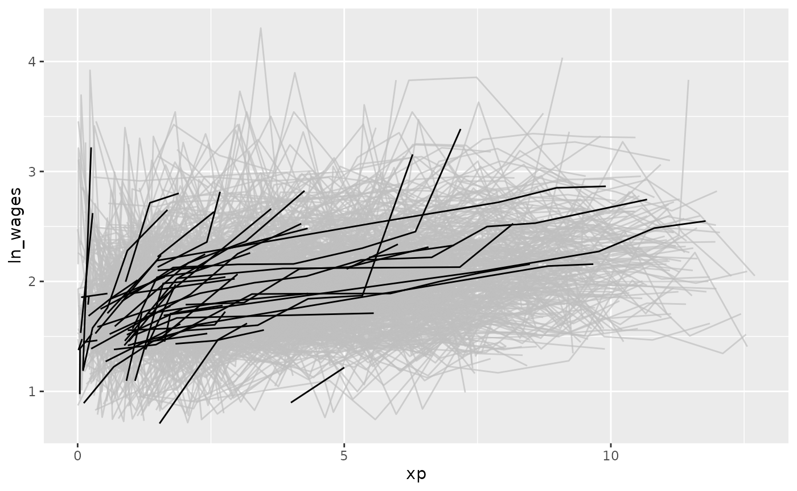
You can explore the available features, see the function References
We can find those individuals who have a negative slope using key_slope. For more detail on key_slope, see the Exploratory Modelling vignette.
wages %>% key_slope(ln_wages ~ xp) #> # A tibble: 888 x 3 #> id .intercept .slope_xp #> <int> <dbl> <dbl> #> 1 31 1.41 0.101 #> 2 36 2.04 0.0588 #> 3 53 2.29 -0.358 #> 4 122 1.93 0.0374 #> 5 134 2.03 0.0831 #> 6 145 1.59 0.0469 #> 7 155 1.66 0.0867 #> 8 173 1.61 0.100 #> 9 206 1.73 0.180 #> 10 207 1.62 0.0884 #> # … with 878 more rows
key_slope fits a linear model for each key, and returns a tibble with the key columns and .intercept and .slope_<varname>, and any other explanatory variables.
We can use gghighlight to identify individuals with an overall negative slope:
library(dplyr) wages_slope <- wages %>% key_slope(ln_wages ~ xp) %>% left_join(wages, by = "id") gg_wages_slope <- ggplot(wages_slope, aes(x = xp, y = ln_wages, group = id)) + geom_line() gg_wages_slope + gghighlight(.slope_xp < 0) #> Warning: Tried to calculate with group_by(), but the calculation failed. #> Falling back to ungrouped filter operation... #> label_key: id #> Too many data series, skip labeling
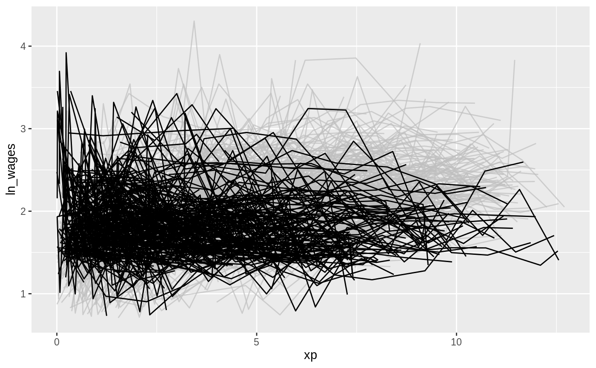
With a positive slope
gg_wages_slope + gghighlight(.slope_xp > 0) #> Warning: Tried to calculate with group_by(), but the calculation failed. #> Falling back to ungrouped filter operation... #> label_key: id #> Too many data series, skip labeling
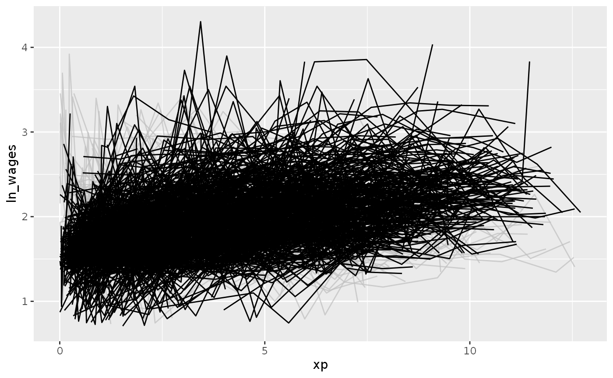
We could even facet by slope:
gg_wages_slope + facet_wrap(~.slope_xp > 0) #> geom_path: Each group consists of only one observation. Do you need to adjust #> the group aesthetic?
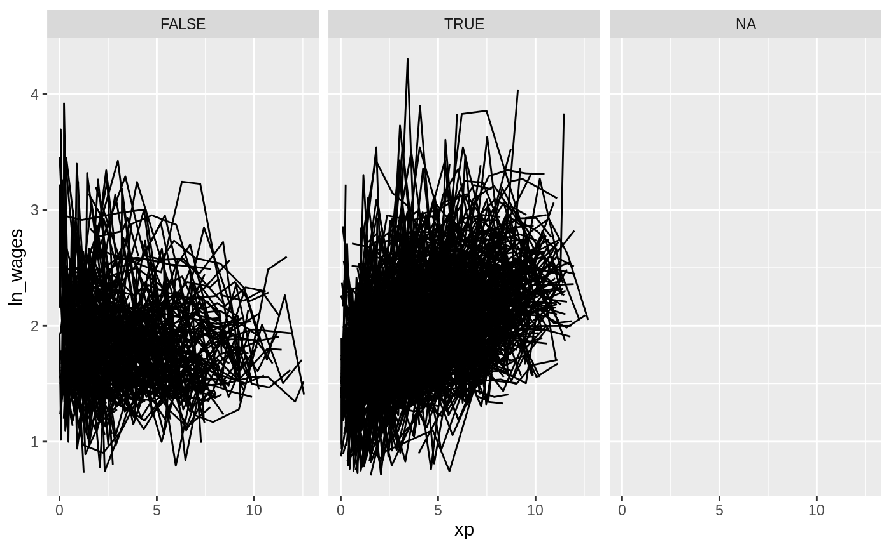
facet_strata
We can use the along argument of facet_strata() to break the data according to some feature. The only catch is that the data passed must be a tsibble.
For example, we could break the data along the .slope_xp variable into 12 groups, which by default will be arranged in descending order. So here we have to groups broken up from most positive slope to most negative.
wages_slope <- wages %>% key_slope(ln_wages ~ xp) %>% # ensures that we keep the data as a `tsibble` left_join(x = wages, y = ., by = "id") gg_wages_slope <- ggplot(wages_slope, aes(x = xp, y = ln_wages, group = id)) + geom_line() gg_wages_slope + facet_strata(n_strata = 12, along = .slope_xp)
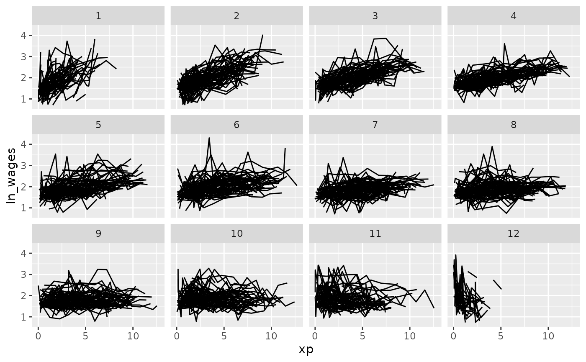
We could then do this along other features of a five number summary:
wages_five <- wages %>% features(ln_wages, feat_five_num) %>% # ensures that we keep the data as a `tsibble` left_join(x = wages, y = ., by = "id") wages_five #> # A tsibble: 6,402 x 14 [!] #> # Key: id [888] #> id ln_wages xp ged xp_since_ged black hispanic high_grade #> <int> <dbl> <dbl> <int> <dbl> <int> <int> <int> #> 1 31 1.49 0.015 1 0.015 0 1 8 #> 2 31 1.43 0.715 1 0.715 0 1 8 #> 3 31 1.47 1.73 1 1.73 0 1 8 #> 4 31 1.75 2.77 1 2.77 0 1 8 #> 5 31 1.93 3.93 1 3.93 0 1 8 #> 6 31 1.71 4.95 1 4.95 0 1 8 #> 7 31 2.09 5.96 1 5.96 0 1 8 #> 8 31 2.13 6.98 1 6.98 0 1 8 #> 9 36 1.98 0.315 1 0.315 0 0 9 #> 10 36 1.80 0.983 1 0.983 0 0 9 #> # … with 6,392 more rows, and 6 more variables: unemploy_rate <dbl>, min <dbl>, #> # q25 <dbl>, med <dbl>, q75 <dbl>, max <dbl>
gg_wages_five <- ggplot(wages_five, aes(x = xp, y = ln_wages, group = id)) + geom_line() gg_wages_five
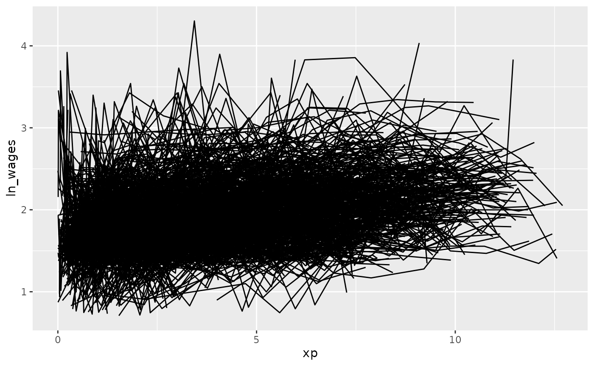
We could move along the minimum:
gg_wages_five + facet_strata(n_strata = 12, along = min)
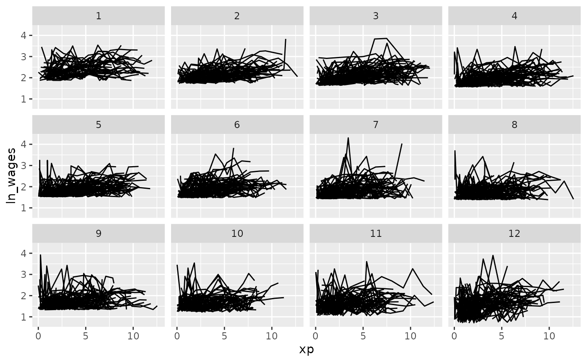
We could move along the maximum:
gg_wages_five + facet_strata(n_strata = 12, along = max)
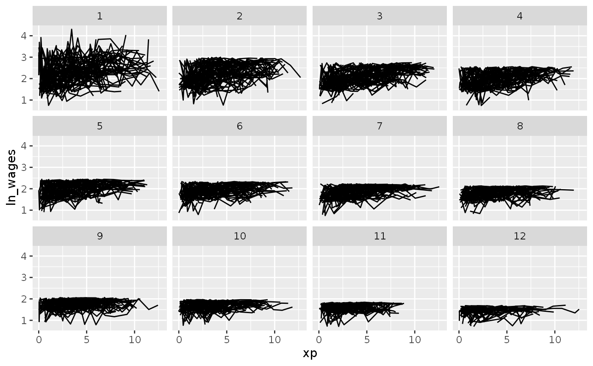
We could move along the median:
gg_wages_five + facet_strata(n_strata = 12, along = med)
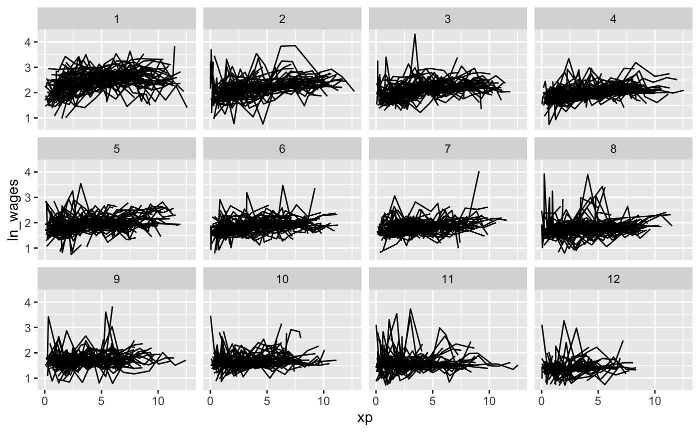
Under the hood there needs to be some summarisation of the data to arrange it like this, details on the implementation are in the helpfile for ?facet_strata.